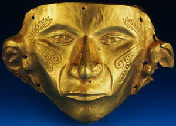
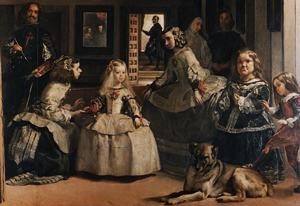
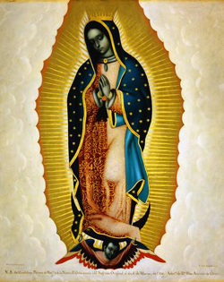
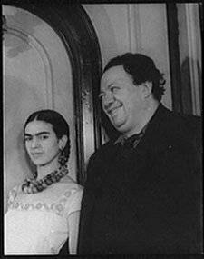

|
|
This guide, compiled by Monica White, is for students and others interested in the subject. It is designed to help researchers begin their studies at the Long Beach City College Library and on the World Wide Web. For further assistance, please stop by the Reference Desk and consult a librarian, who will help you find the resources mentioned below and more. |
|
| Contents: |
| Find Reference Books | Find Books to Check Out | Find Articles | Find Periodicals | Find Multimedia |
| Dictionary of Art. 34 Vols. Ref N 31 .D5 1996 |
| This landmark publication covers the visual arts worldwide. In Vol. 18, there is an excellent article on Pages 830-835, entitled "Latin American Artists of the United States." |
|
| Encyclopedia of Latin American History and Culture. 5 vols. Ref F 1406 .E53 1996 |
|
| Encyclopedia of Mexico: History, Society & Culture. 2 vols. Ref F 1210 .E63 1997 | |
| See the article on "Visual Arts" in Volume 2, Pages 1539-94. |
|
| Handbook of Hispanic Cultures in the U.S. Volume 1: Literature and Art. Ref E 184 .S75 H365 | |
| See Pages 192-217 for an article entitled "From Barrio to Mainstream: The Panorama of Latino Art." |
|
| Handbook of Mesoamerican Mythology. Ref F 1219.3 .R38 R42 2000 |
|
| The Hispanic-American Almanac. Ref E 184 .S75 H557 1997 | |
| Contains a chapter on Pages 507-548 about the sources of Hispanic art from 1599 to the present. |
|
| Historical Atlas of Ancient America. Ref G 1101 .E6 B3 2001 |
|
| Covers the Olmecs, Maya, Tolmec, and Aztecs. |
|
| The Oxford Encyclopedia of Mesoamerican Cultures. 3 vols. Ref F 1218.6 .O95 2001 | |
| Covers art from the pre-Hispanic period to the 20th Century. |
|
| back to top |
|  |
Other useful reference books
These books are shelved in the Reference Room of the LAC Library. |
|
|
Gold Pre-Colombian Mask
Copyright © Corbis Corp. Image ID CS008521 |
Chicano history |
||
| American Immigrant Cultures. 2 vols. | Ref E 184 .A1 A63448 1997 | |
| Civil Rights in the United States. 2 vols. | Ref E 184 .A1 C47 2000 | |
| Biography | ||
| Current Biography | Bio Ref CT 100 .C8 | |
| Dictionary of Hispanic Biography | Bio Ref E 184.5 .S75 D53 1996 | |
| Dictionary of Women Artists. 2 vols. | Bio Ref N 8354 .D53 1997 | |
| Dictionary of World Biography | Bio Ref CT 104 .D54 | |
| Encyclopedia of World Biography. 20 vols. | Bio Ref CT 103 .E56 1998 | |
| Notable Hispanic American Women. 2 vols. | Bio Ref E 184 .S75 N68 1998 | |
| Notable Latino Americans | Bio Ref E 184 .S75 M435 1997 | |
| Who's Who in American Art | Bio Ref N 6536 .W5 2001-02 | |
| back to top |
|
FIND BOOKS TO CHECK OUT
The Library’s online catalog, called Voyager, indexes books, electronic books, periodicals, audiovisual resources, and other material by subject, author, title, keyword, and call number. |
 | |
|
|
||
|
Las Meninas by Velazquez
Copyright © Corbis Corp. Image ID MA10971A |
| Keyword searching allows you to search by descriptive words. Place a plus sign (+) before a keyword. Enter a phrase search in quotation marks. And truncate, or look for partial words or variant word endings, by place a question mark (?) at the end of your search term. For example, +Chican? finds "Chicana" or "Chicano." |
|||
| +Chican? +art | [Keyword Search] | ||
| +Latin? +art | [Keyword Search] | ||
| +Mexic? +art | [Keyword Search] | ||
| "Chicano Renaissance" | [Keyword Search] | ||
| Use a subject search when you have a precise subject heading. If you're searching by a person's name, remember to put the last name first. |
|||
| Kahlo, Frida | [Subject Search] | ||
| Folk art Mexico | [Subject Search] | ||
| Mexican American art | [Subject Search] | ||
| Mural painting and decoration 20th Century United States | [Subject Search] | ||
| Olmecs art | [Subject Search] | ||
| You can also browse the shelves by the Library of Congress Classification letters assigned to books in these subject areas: |
||
| E 184 .M5 | Chicanos, Mexican Americans | |
| F 1219 | Mesoamerica, Olmecs, Aztecs | |
| F 1435.3 | Mayas | |
| N 6538 | Art, Latin American—United States | |
| ND 259 | Mexican painters | |
| Selected circulating books that you may check out. |
||
| Chicano Art Inside/Outside the Master's House: Cultural Politics and the CARA Exhibition Location: PCC Library. Call Number: N 6538l.M4 G37 1998 |
||
| Hispanic Art in the United States: Thirty Contemporary Painters & Sculptors Location: LAC Library. Call Number: N 6538 .H58 B43 1987 |
||
| The Latin American Spirit: Art and Artistis in the United States, 1920-1970 Location: LAC Library. Call Number: N 6538 .L3 L38 1988 |
||
| Since LBCC Library has a partnership agreement with California State University, Long Beach, you may check out books from the University Library. To identify books, search CSULB's online catalog, called Coast, which is accessible over the Web at http://coast.csulb.edu. |
| back to top |
|
The Library subscribes to a number of online databases, which are accessible over the World Wide Web, from remote computers or those located in the Library. These databases index and abstract articles, and in some cases, provide the full text, enabling you to print a copy at a cost of $.10 per page. Alternatively, you may e-mail a copy of the article to your e-mail address, if you have one, and print it later at home.The databases that are perhaps the most useful for your assignment are
ProQuest SIRS Renaissance |
||
|
|
||
|
|
| You will need passwords to access these databases. A current list of passwords is available at the Reference Desk. To become proficient in database searching, the librarians recommend that you attend the free, drop-in workshops, offered on Monday, Tuesday, and Wednesday, from 2 to 3 pm in Room L208 (the Open-Access Lab.). There, you will receive individual instruction and hands-on practice. |
||
|  | Ethnic NewsWatch (accessed through ProQuest) is a full-text database, covering newspapers, magazines, and journals of the ethnic, minority and native press. It is searchable in both English and Spanish, with titles in both languages. Some archival materials date back to 1985. |
||
| The Virgin of Guadalupe by Miguel Cabrera Copyright © Corbis Corp. Image ID IX003312 |
|||
| ProQuest | ||
| ProQuest indexes literature published in newspapers, magazines, and journals. This database is organized into collections of publications related to particular areas of focus. To focus your search on art history, you may click on "Collections" from the main menu, and then select the "Humanities Module." The basic search allows you to search for keywords and combine keywords with the following connecting words (known as Boolean operators): AND, OR, NOT. The advanced search allows you to use fields to focus your search on a specific piece of information. Sample fields are subject, named person, and publication name. |
||
| SIRS Renaissance |
||
| Provides full-text information on the visual arts, as well as music, literature, film, performing arts, culture, architecture, philosophy, and religion. Many articles are accompanied by full-color graphics — including art reproductions, photographs and illustrations. Available on-campus only. |
||
|
Print Indexes
Use print indexes to find older articles published prior to the advent of online databases. You'll find these indexes in the Reference Room of the LAC Library. Art Index Index Ref Z5937 .A78 Humanities Index Index Ref AI 3 .H85 |
|||
| Venus Negra by Rufino Tamayo © Estate of Rufino Tamayo |
|  | MULTIMEDIA RESOURCES |
|
| Unless noted otherwise, the works below are videos in the Library-Media collection, located in the Periodicals Room. Students may request videos and watch them in the Library. DVDs and audio CDs are in the LAC Library, and they may be checked out. |
||
| The Aztecs | ||
| Frida Kahlo | ||
| Frida (audio CD of the soundtrack to the motion picture) | ||
| Guillermo Gomez-Pena | ||
| Latino Artists: Pushing Artistic Boundaries | ||
| The Mayans | ||
| Portrait of Frida Kahlo and Diego Rivera. Library of Congress, Prints & Photographs Division, Carl Van Vechten Collection, Reproduction No. LC-USZ62-42516 DLC |
||
| FIND INTERNET RESOURCES |
|||
Use subject directories to find Web sites listed by subject. Here are some useful subject directories: |
|||
| Librarians' Index to the Internet (LII) | http://www.lii.org | ||
| Infomine | http://infomine.ucr.edu | ||
Use search engines to find Web sites indexed under keywords. You can search for images, as well as text files. Here are some useful search engines: |
|||
| http://www.google.com | |||
| Ask.com | http://ask.com | ||
| Selected Web Sites |
|||
| http://cemaweb.library.ucsb.edu Chicano Visual Arts Digital Collection from California Ethic and Multicultural Archives at UCSB |
|||
| http://latino.sscnet.ucla.edu/research/art.html A list of sites compiled for Chicano art studies by librarians at the UCLA Research Library |
|||
| http://www.si.edu/resource/faq/nmah/latino.htm U.S. Latino History and Culture at the Smithsonian |
|||
| http://sac.edu/students/library/nealley/websites/jg_art104.htm Mexican and Chicano Art History compiled by librarians at Santa Ana College |
|||
| http://www.sparcmurals.org/home.html Social and Political Art Resource Center's sample of murals |
|||
| http://www.diegorivera.com/diego_home_eng.html Diego Rivera Virtual Library |
|||
| When selecting additional Web sites for research, consult Thinking Critically about Discipline-based WWW Resources. This page, authored by UCLA librarian Esther Grassian, presents an excellent set of criteria for evaluating the authority and reliability of Web sites. |
| back to top |
| CITE YOUR SOURCES Remember to list the sources used in your research in a bibliography or works-cited page following a documentation style, such as MLA (Modern Language Association) or APA (American Psychological Association). The most up-to-date guides for citing Web pages and other electronic sources in footnotes and bibliographies are on the Web, and they are accessible from the Library's homepage at http://lib.lbcc.edu. Click on "Internet Resources," then click on "Citation Guides." |
||
|
San Diego Mural Depicting Southwest History
Copyright © Corbis Corp. Image ID CB011450 |
| Contents: |
| Find Reference Books | Find Books to Check Out | Find Articles | Find Periodicals | Find Multimedia |
| back to top |
Image of ancient Mexican motif reproduced with permission from Dover Publications.
Image of Goya painting reproduced with permission from visipix.com.
Image of Tamayo lithograph reproduced with permission from Museo Tamayo
Images from Corbis Corporation reproduced with permission under the terms and conditions
of a personal use license granted to Monica White.
Further reproduction or distribution is prohibited
without the written prior consent of the coyright holders.
Image from the Library of Congress American Memory Project is not copyrighted.
E-mail questions and comments to mwhite@lbcc.edu
Monica White, Liberal Arts Campus Library
http://lib.lbcc.edu/monicawhite/orientations/chicanoart.html
Last updated: January 17, 2007
| back to top |
| back to Library homepage |